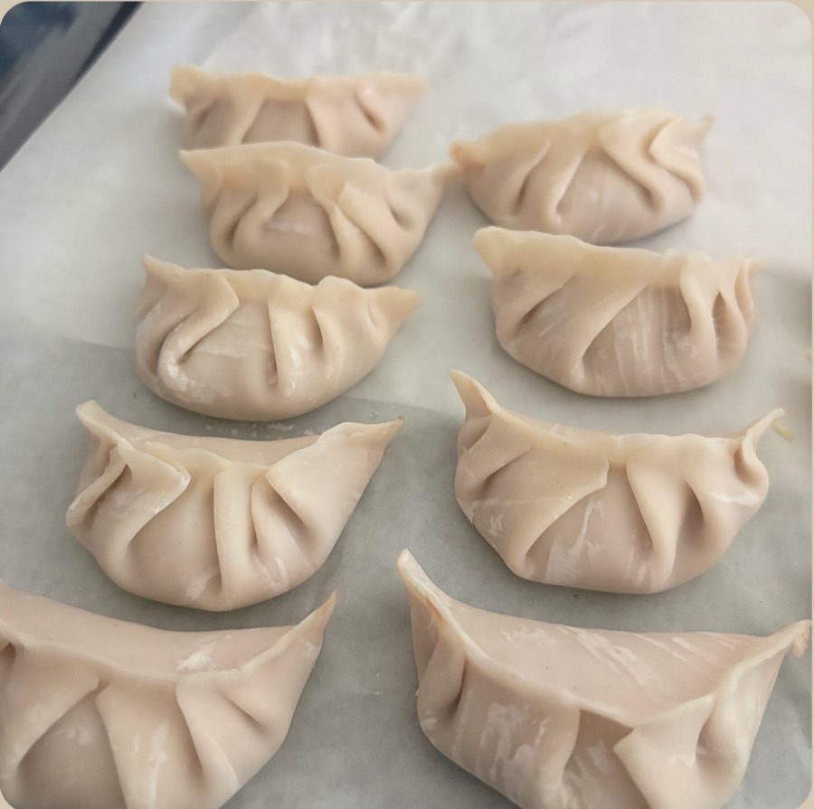
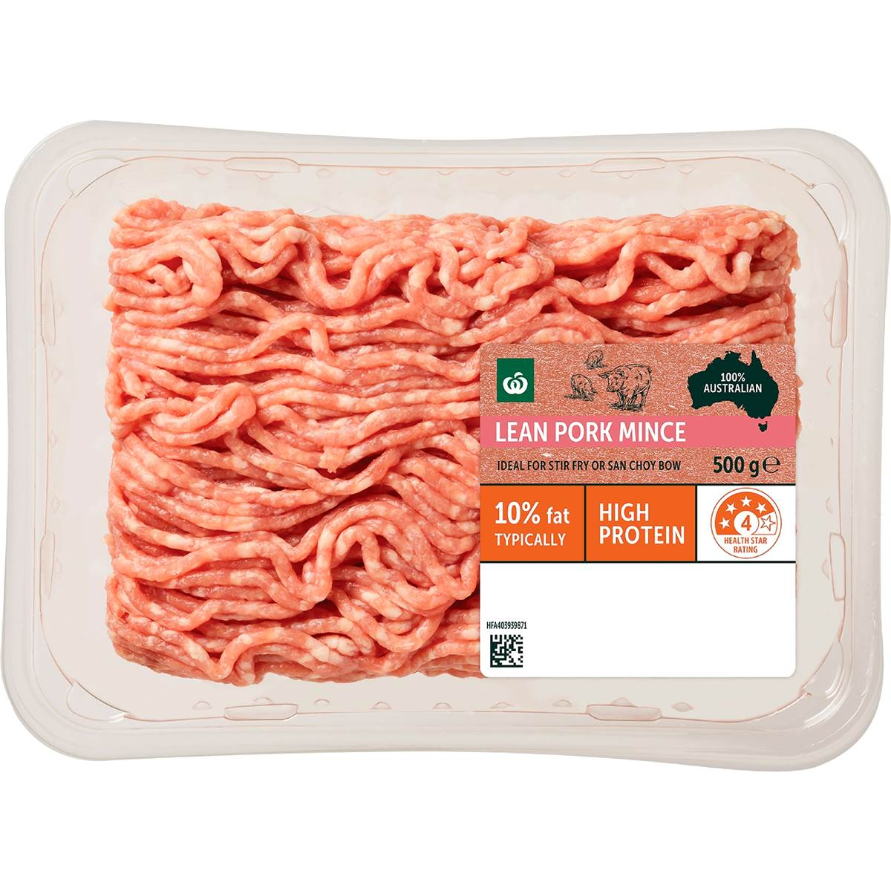
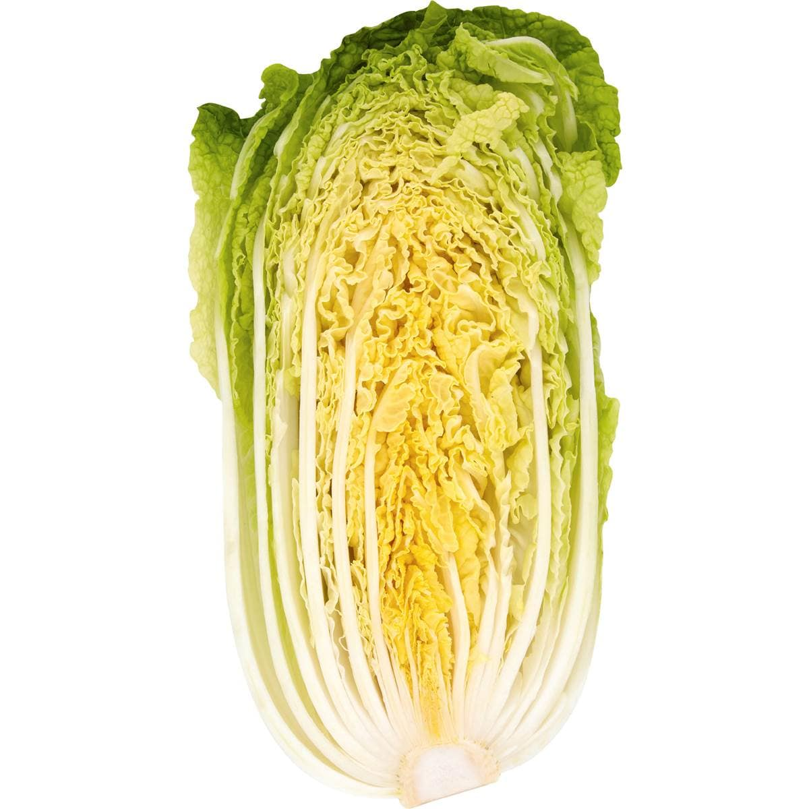
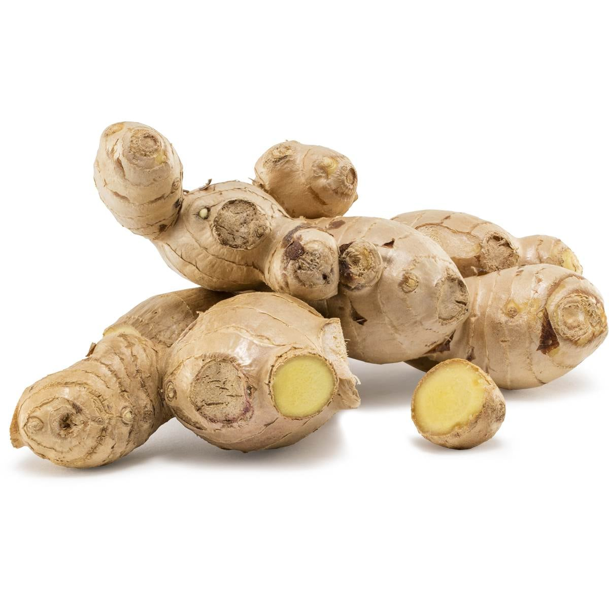
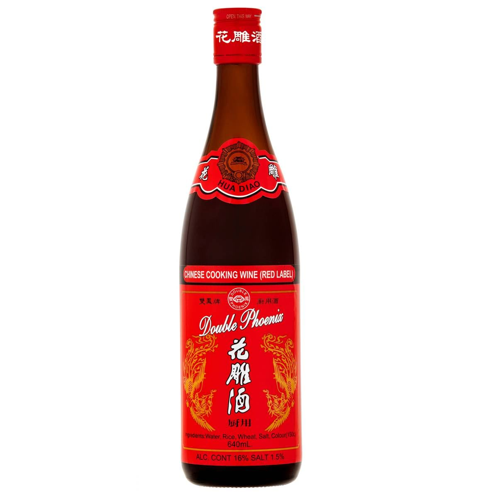

Pork & Cabbage Dumplings
Juicy pork and wombok dumplings, pleated by hand and pan-fried until crisp on the bottom.

Juicy pork and wombok dumplings, pleated by hand and pan-fried until crisp on the bottom.

500g pork mince
1/4 wombok (Chinese cabbage), finely chopped 3 spring onions, finely sliced
3 spring onions, finely sliced
1 thumb of ginger, grated 2 tbsp soy sauce
2 tbsp soy sauce
1 tbsp Shaoxing wine 1 tsp salt
1 tsp saltFreeze extras on a tray before bagging them so they do not stick together; they cook straight from frozen with an extra 2 minutes of steaming. Serve with soy sauce, black vinegar and chilli oil.